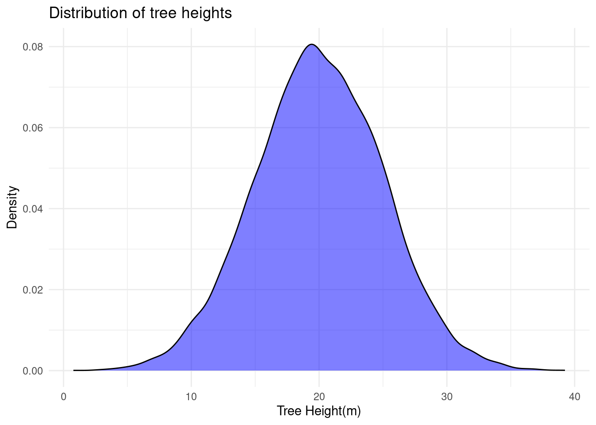
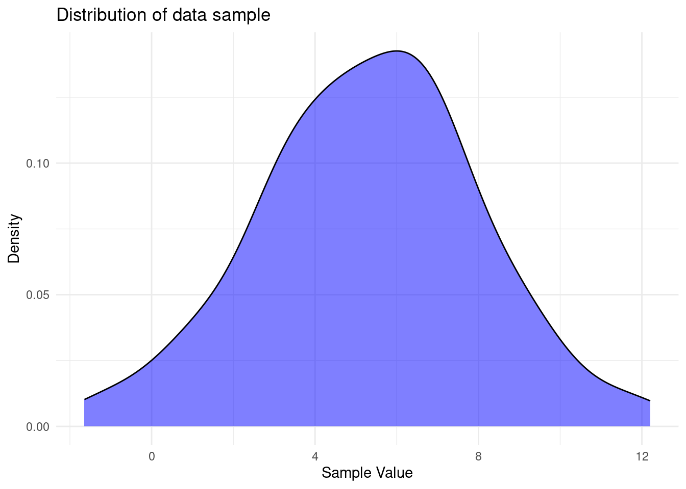

Ecological Analysis
2024-11-16
Chapter 1 INTRODUCTION
The distinction between data sample and the underlying data population is always ignored. For instance the mean concentration of a chemical contaminant in a soil sample of a contaminated site. Here, the data sample is the soil sample that was taken to the laboratory to find out the mean concentration of the contaminant while the data population is the entire data population consisting of all possible soil measurements of the chemical contaminant at the site. We need to define some terms to get this clear.
- Data Population: is the entire set of individuals, items or observations of interest in a study. For instance all the soil samples from the contaminant site.
- Data Sample: is the subset of the population selected for analysis. For example, measuring the height of randomly selected trees in the forest.
- Data Distribution: describes how data points are spread of arranged.
Data Sample vs Data Population
A deep understanding of the difference between data sample and data population is important in inferential statistics which seeks to generalize the results of data analyses performed on the data samples. A data population consists of all possible observations or data points concerning the characteristic of interest. For instance, when finding out the mean height of all the oak trees in a forest, the data population will be every height of every single oak tree in the forest.
Contrary, data sample is usually a limited subset of observations drawn for the entire population. In this case we can have a data sample by randomly selecting 100 oak trees and measuring their heights.
Try it!
Lets simulate data of oak trees with R
# Seed for reproducibility
set.seed(123)
# A population of 12500 oak trees
population_heights <- rnorm(12500, mean = 20, sd=5)
head(population_heights)## [1] 17.19762 18.84911 27.79354 20.35254 20.64644 28.57532We have simulated the heights of 12500 oak trees in a forest. The variance population_heights represent the data population for the oak tree heights. Lets randomly select 86 trees from the entire data population of oak tree heights
# Randomly select 86 trees
sample_heights <- sample(population_heights, size=86, replace = FALSE)
tail(sample_heights)## [1] 25.88792 29.03996 29.00965 37.10547 17.76631 19.81021The variable sample_heights represents data sample for the oak tree heights.
If we make this experiment more interesting, we find the mean and standard deviation for the data population and the data sample for the oak tree heights. Lets do it!
# Mean and standard deviation of the entire population
population_stats <- c(
Mean = mean(population_heights),
SD = sd(population_heights)
)
population_stats## Mean SD
## 19.995609 4.996295The entire oak tree data population has a mean height of approximately 20 meters and a standard deviation of approx 5 meters. Lets see how it compares with the data sample of the oak tree heights.
# Mean and standard deviation of the sample
sample_stats <- c(
Mean = mean(sample_heights),
SD = sd(sample_heights)
)
sample_stats## Mean SD
## 21.094995 5.507379There is a minor difference between the data sample and the entire data population of the oak tree heights. As you can see the selected sample of oak trees has an average height of 21 meters and a standard deviation of 5.5 meters.
Practical Exercise
Run the code below to generate the data of soil samples collected in farm with livestock. The main objective was to find the pH of the soil.
Use the code below to simulate the collection of the data.
# Set seed for reproducibility
set.seed(76)
# Simulate the data collection
farm_population_pH <- rnorm(n = 5342, mean=3.61, sd=0.8)
head(farm_population_pH)## [1] 3.864037 3.471632 3.544874 3.192810 3.239502 3.724600You are required to work on the problems below;
- What is the Mean and Standard Deviation of the pH of the entire farm population soil samples.
- Select 65 random samples from the entire population.
- Calculate the Mean and Standard Deviation of the sample.
- How does the Mean and Standard deviation differ from the entire population?
Solution
Run the code below to generate the data of soil samples collected in farm with livestock. The main objective was to find the pH of the soil.
Use the code below to simulate the collection of the data.
# Set seed for reproducibility
set.seed(76)
# Simulate the data collection
farm_population_pH <- rnorm(n = 5342, mean=3.61, sd=0.8)
head(farm_population_pH)## [1] 3.864037 3.471632 3.544874 3.192810 3.239502 3.724600You are required to work on the problems below;
- What is the Mean and Standard Deviation of the pH of the entire farm population soil samples.
population_stats <- c(
Mean = mean(farm_population_pH),
standard_deviation = sd(farm_population_pH)
)
population_stats # show the results## Mean standard_deviation
## 3.6218315 0.7934042- Select 65 random samples from the entire population.
## [1] 3.478034 4.268278 4.084203 4.044815 2.613637 3.575463- Calculate the Mean and Standard Deviation of the sample.
sample_stats <- c(
Mean = mean(farm_sample_pH),
standard_deviation = (sd(farm_sample_pH))
)
sample_stats # show the results## Mean standard_deviation
## 3.7237092 0.7554283- How does the Mean and Standard deviation differ from the entire population?
The sample mean is slightly higher than the whole population mean while the standard deviation of the whole populations is almost equal to the data sample’s standard deviation
________________________________________________________________________________
1.1 Data Distributions
Data Distribution describes how data values in data population are spread across the range of possible values. For instance, in our case the height of oak trees in the forest might be distributed normally, meaning that most trees cluster around the average height. Understanding data distribution is crucial in ecological analysis since it helps in;
- identifying patterns ( for instance seasonal changes in bird populations).
- choosing appropriate statistical tests.
- modelling ecological phenomena accurately.
When dealing with continuous data values like height of oak trees, soil acidity or rainfall, Probability Distribution Functions is used to find the likelihood of different outcomes in a population. There are two types of probability distribution functions, namely;
- Cumulative distribution function,
- Empirical Cumulative distribution function.
Below is the distribution of oak tree heights represented in a density plot.
library(ggplot2)
# Create a data frame from the data
oak_df <- data.frame(Height = population_heights)
# Plot the density plot
ggplot(oak_df,
aes(x = Height)) +
geom_density(fill = "blue", alpha=0.5) +
labs(
title = "Distribution of tree heights",
x = "Tree Height(m)",
y = "Density"
) +
theme_minimal()
Above is the distribution of oak tree heights, lets find its probability using the two types of distribution functions.
Cumulative Distribution Function
This distribution function leans toward that a probability of a random variable is less than or equal to a certain value.
Empirical Cumulative Distribution Function
———————-Add more info—————–
1.1.1 Types of Distribution
In statistical tests, it is assumed that the data sample represents the underlying data population. Similarly, the distribution of the data sample is assumed to be similar to the one of the data population.
These are what characterizes the data distribution; whether the data is;
- discrete or continuous
- symmetrical or asymmetrical
- bounded by lower and/or upper limits or unbounded.
Lets discuss different types of data distributions.
1.1.1.1 Normal distribution
The normal distribution is a continuous symmetrical distribution in the real number domain (i.e., with the set of possible values ranging between -∞ and ∞) whose probability density function plots as a smooth bell-shaped curve, and whose cumulative distribution is S-shaped.
Try it!
To demonstrate this, lets generate 100 random data values with a mean of 5 and a standard deviation of 3.
set.seed(1)
data <- rnorm(100, mean=5, sd=3)
df <- data.frame(data)
# Plot the data
ggplot(df,
aes(x = data)) +
geom_density(fill = "blue", alpha=0.5) +
labs(
title = "Distribution of data sample",
x = "Sample Value",
y = "Density"
) +
theme_minimal()
The data distribution below represents a near bell-shaped curve.
A normal distribution with a mean of zero and variance of 1 (or standard deviation of 1, since standard deviation is the square root of variance and square root of 1 is 1) is referred to as a standard normal distribution
A standard normal distribution has many applications in statistics such as computation of cumulative probabilities and critical values for hypothesis tests.
Try it!
Lets generate a random data set that is standardized.
set.seed(100)
data <- rnorm(100, mean=0, sd=1)
df <- data.frame(data)
# Plot the data
ggplot(df,
aes(x = data)) +
geom_density(fill = "blue", alpha=0.5) +
labs(
title = "Distribution of data sample",
x = "Sample Value",
y = "Density"
) +
theme_minimal()
Any data sample that follows a normal distribution can be standardized to a standard normal distribution by subtracting its mean from each individual data value and dividing the result by its standard deviation. The resultant values can be referred to as standard score, normal score, normal quantile or z-value)
Here is the formula for calculation the z-value (standardized score); \[z = {{x - \overline x}\over{\sigma}}\]
Where;
- \(x\) is the actual value
- \(\overline x\) is the data sample mean
- \(\sigma\) is the standard deviation
Try it
——————-will generate a data distribution with a known standard deviation and mean then standardize it. Will then plot both samples - raw data and the standardized one—————————-
Example: CUMULATIVE AND EXCEEDANCE PROBABILITIES FOR A NORMAL DISTRIBUTION
Groundwater Manganese Concentrations in mg/L
______________________Expand on this____________________________________
modify the code below to show up the distribution
x = seq(0, 0.4, length=100)
y = dnorm(x, 0.52, 0.18)
polygon(c(0, x, 0.4), c(0, y, 0), col = "gray")
# Add a shaded area
x = seq(1, 0.9, length=25)
y = dnorm(x, 0.52, 0.18)
polygon(c(1, x, 0.9), c(0, y, 0), col = "gray")
Goodness-of-Fit (GOF) Tests for the Normal Distribution
In parametric statistical tests, it assumed that the data is normally distributed or can be normalized by data transformation such as log transform. The parameters, such as mean and standard deviation, in parametric tests must be specified.
Verifying the data normality is crucial before conducting the tests. If it fails the test of normality other types of tests(non parametric) are considered. The GOF tests are used to access the normality of the data sample which requires 8 to 10 randomly picked data values.
The tests are;
- Normal probability plot - also known as normal quantile plot.
- Coefficient of Variation(CV)
- Coefficient of Skewness
- Shapiro-Wilk(SW) and Shapiro-Francia(SF) procedures
- Filiben’s probability plot correlation coefficient (PPCC)
- Shapiro-Wilk multiple group normality
The CV test is the most commonly used method. It is computed simply by dividing the standard deviation by the mean. If the resultant value is greater than 1 then the data fails the normality test, otherwise it passes. \[CV = {\sigma\over{\overline x}}\]
Other GOF tests that are used in testing for normal and other distributions are Anderson–Darling (AD) test and the Lilliefors–Kolmogorov–Smirnov test
The Coefficient of Skewness stated above provides a more direct measure of skewness where skewness of the magnitude of greater than 0.5 is considered moderate to the substantial degree of skewness.
——————————Add an example————————
Central Limit Theorem
____________________simplify it with an example _________________________
1.1.1.2 Lognormal, Gamma, and Other Continuous Distributions
Before we dive into Gamma distribution, we need to to get the definition of exponential distribution. Exponential distribution is the probability of the waiting time between events in a Poisson Process.
Gamma Distribution
Exponential infers the probability until the first event happens while Gamma distribution gives us the probability of the waiting time until the \(n^{th}\) event.
Gamma distribution
- Logistic Distribution
- Other Continuous Distributions